Optics shlukování – Vývoj
Generace 0
Generace 1
Stabilita mezi generací 0 → 1:
Shluk -1 → 0: 5 jedinců (31.2 %)
Shluk -1 → -1: 11 jedinců (68.8 %)
Shluk 0 → 0: 69 jedinců (82.1 %)
Shluk 0 → -1: 15 jedinců (17.9 %)
Jaccardovo mapování a overlap: Generace 0 → 1
- Shluk 0 → 0 (Jaccard: 0.78, Overlap: 0.93)
Posun centroidů mezi generací 0 → 1:
- Shluk 0: 2.2969
Generace 2
Stabilita mezi generací 1 → 2:
Shluk 0 → -1: 24 jedinců (32.4 %)
Shluk 0 → 0: 50 jedinců (67.6 %)
Shluk -1 → 0: 17 jedinců (65.4 %)
Shluk -1 → -1: 9 jedinců (34.6 %)
Jaccardovo mapování a overlap: Generace 1 → 2
- Shluk 0 → 0 (Jaccard: 0.55, Overlap: 0.75)
Posun centroidů mezi generací 1 → 2:
- Shluk 0: 1.6928
Generace 3
Stabilita mezi generací 2 → 3:
Shluk -1 → -1: 8 jedinců (24.2 %)
Shluk -1 → 0: 25 jedinců (75.8 %)
Shluk 0 → -1: 34 jedinců (50.7 %)
Shluk 0 → 0: 33 jedinců (49.3 %)
Jaccardovo mapování a overlap: Generace 2 → 3
- Shluk 0 → 0 (Jaccard: 0.36, Overlap: 0.57)
Posun centroidů mezi generací 2 → 3:
- Shluk 0: 1.3196
Generace 4
Stabilita mezi generací 3 → 4:
Shluk -1 → -1: 19 jedinců (45.2 %)
Shluk -1 → 0: 23 jedinců (54.8 %)
Shluk 0 → -1: 27 jedinců (46.6 %)
Shluk 0 → 0: 31 jedinců (53.4 %)
Jaccardovo mapování a overlap: Generace 3 → 4
- Shluk 0 → 0 (Jaccard: 0.38, Overlap: 0.57)
Posun centroidů mezi generací 3 → 4:
- Shluk 0: 1.7978
Generace 5
Stabilita mezi generací 4 → 5:
Shluk -1 → 0: 38 jedinců (82.6 %)
Shluk -1 → -1: 8 jedinců (17.4 %)
Shluk 0 → 0: 31 jedinců (57.4 %)
Shluk 0 → -1: 23 jedinců (42.6 %)
Jaccardovo mapování a overlap: Generace 4 → 5
- Shluk 0 → 0 (Jaccard: 0.34, Overlap: 0.57)
Posun centroidů mezi generací 4 → 5:
- Shluk 0: 1.3821
Generace 6
Stabilita mezi generací 5 → 6:
Shluk 0 → 0: 38 jedinců (55.1 %)
Shluk 0 → -1: 31 jedinců (44.9 %)
Shluk -1 → 0: 23 jedinců (74.2 %)
Shluk -1 → -1: 8 jedinců (25.8 %)
Jaccardovo mapování a overlap: Generace 5 → 6
- Shluk 0 → 0 (Jaccard: 0.41, Overlap: 0.62)
Posun centroidů mezi generací 5 → 6:
- Shluk 0: 1.5794
Generace 7
Stabilita mezi generací 6 → 7:
Shluk 0 → 0: 48 jedinců (78.7 %)
Shluk 0 → -1: 13 jedinců (21.3 %)
Shluk -1 → 0: 35 jedinců (89.7 %)
Shluk -1 → -1: 4 jedinců (10.3 %)
Jaccardovo mapování a overlap: Generace 6 → 7
- Shluk 0 → 0 (Jaccard: 0.50, Overlap: 0.79)
Posun centroidů mezi generací 6 → 7:
- Shluk 0: 0.8247
Generace 8
Stabilita mezi generací 7 → 8:
Shluk 0 → 0: 45 jedinců (54.2 %)
Shluk 0 → -1: 38 jedinců (45.8 %)
Shluk -1 → -1: 8 jedinců (47.1 %)
Shluk -1 → 0: 9 jedinců (52.9 %)
Jaccardovo mapování a overlap: Generace 7 → 8
- Shluk 0 → 0 (Jaccard: 0.49, Overlap: 0.83)
Posun centroidů mezi generací 7 → 8:
- Shluk 0: 0.8868
Generace 9
Stabilita mezi generací 8 → 9:
Shluk 0 → 0: 29 jedinců (53.7 %)
Shluk 0 → -1: 25 jedinců (46.3 %)
Shluk -1 → 0: 31 jedinců (67.4 %)
Shluk -1 → -1: 15 jedinců (32.6 %)
Jaccardovo mapování a overlap: Generace 8 → 9
- Shluk 0 → 0 (Jaccard: 0.34, Overlap: 0.54)
Posun centroidů mezi generací 8 → 9:
- Shluk 0: 0.5593
Generace 10
Stabilita mezi generací 9 → 10:
Shluk 0 → 0: 34 jedinců (56.7 %)
Shluk 0 → -1: 26 jedinců (43.3 %)
Shluk -1 → 0: 25 jedinců (62.5 %)
Shluk -1 → -1: 15 jedinců (37.5 %)
Jaccardovo mapování a overlap: Generace 9 → 10
- Shluk 0 → 0 (Jaccard: 0.40, Overlap: 0.58)
Posun centroidů mezi generací 9 → 10:
- Shluk 0: 0.7502
Generace 11
Stabilita mezi generací 10 → 11:
Shluk 0 → 0: 49 jedinců (83.1 %)
Shluk 0 → -1: 10 jedinců (16.9 %)
Shluk -1 → 0: 34 jedinců (82.9 %)
Shluk -1 → -1: 7 jedinců (17.1 %)
Jaccardovo mapování a overlap: Generace 10 → 11
- Shluk 0 → 0 (Jaccard: 0.53, Overlap: 0.83)
Posun centroidů mezi generací 10 → 11:
- Shluk 0: 1.5272
Generace 12
Stabilita mezi generací 11 → 12:
Shluk 0 → 0: 65 jedinců (78.3 %)
Shluk 0 → -1: 18 jedinců (21.7 %)
Shluk -1 → 0: 11 jedinců (64.7 %)
Shluk -1 → -1: 6 jedinců (35.3 %)
Jaccardovo mapování a overlap: Generace 11 → 12
- Shluk 0 → 0 (Jaccard: 0.69, Overlap: 0.86)
Posun centroidů mezi generací 11 → 12:
- Shluk 0: 0.4001
Generace 13
Stabilita mezi generací 12 → 13:
Shluk 0 → 0: 48 jedinců (63.2 %)
Shluk 0 → -1: 28 jedinců (36.8 %)
Shluk -1 → 0: 17 jedinců (70.8 %)
Shluk -1 → -1: 7 jedinců (29.2 %)
Jaccardovo mapování a overlap: Generace 12 → 13
- Shluk 0 → 0 (Jaccard: 0.52, Overlap: 0.74)
Posun centroidů mezi generací 12 → 13:
- Shluk 0: 1.4711
Generace 14
Stabilita mezi generací 13 → 14:
Shluk 0 → 0: 53 jedinců (81.5 %)
Shluk 0 → -1: 12 jedinců (18.5 %)
Shluk -1 → 0: 30 jedinců (85.7 %)
Shluk -1 → -1: 5 jedinců (14.3 %)
Jaccardovo mapování a overlap: Generace 13 → 14
- Shluk 0 → 0 (Jaccard: 0.56, Overlap: 0.82)
Posun centroidů mezi generací 13 → 14:
- Shluk 0: 0.6003
Generace 15
Stabilita mezi generací 14 → 15:
Shluk 0 → 0: 44 jedinců (53.0 %)
Shluk 0 → -1: 39 jedinců (47.0 %)
Shluk -1 → 0: 7 jedinců (41.2 %)
Shluk -1 → -1: 10 jedinců (58.8 %)
Jaccardovo mapování a overlap: Generace 14 → 15
- Shluk 0 → 0 (Jaccard: 0.49, Overlap: 0.86)
Posun centroidů mezi generací 14 → 15:
- Shluk 0: 1.1151
Generace 16
Stabilita mezi generací 15 → 16:
Shluk 0 → 0: 37 jedinců (72.5 %)
Shluk 0 → -1: 14 jedinců (27.5 %)
Shluk -1 → 0: 32 jedinců (65.3 %)
Shluk -1 → -1: 17 jedinců (34.7 %)
Jaccardovo mapování a overlap: Generace 15 → 16
- Shluk 0 → 0 (Jaccard: 0.45, Overlap: 0.73)
Posun centroidů mezi generací 15 → 16:
- Shluk 0: 0.6567

Generace 17
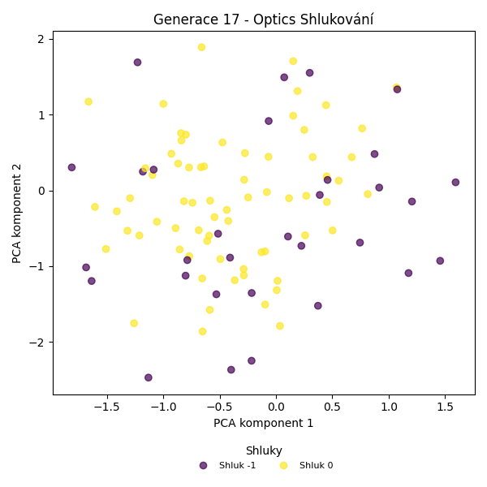
Stabilita mezi generací 16 → 17:
Shluk 0 → -1: 20 jedinců (29.0 %)
Shluk 0 → 0: 49 jedinců (71.0 %)
Shluk -1 → -1: 11 jedinců (35.5 %)
Shluk -1 → 0: 20 jedinců (64.5 %)
Jaccardovo mapování a overlap: Generace 16 → 17
- Shluk 0 → 0 (Jaccard: 0.55, Overlap: 0.71)
Posun centroidů mezi generací 16 → 17:
- Shluk 0: 0.7990
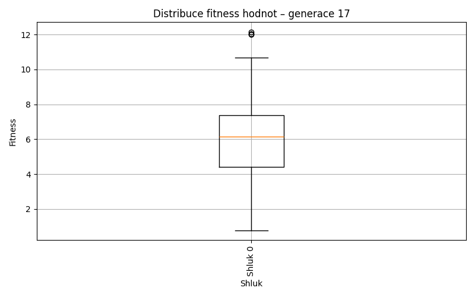
Generace 18
Stabilita mezi generací 17 → 18:
Shluk -1 → 0: 20 jedinců (64.5 %)
Shluk -1 → -1: 11 jedinců (35.5 %)
Shluk 0 → 0: 43 jedinců (62.3 %)
Shluk 0 → -1: 26 jedinců (37.7 %)
Jaccardovo mapování a overlap: Generace 17 → 18
- Shluk 0 → 0 (Jaccard: 0.48, Overlap: 0.68)
Posun centroidů mezi generací 17 → 18:
- Shluk 0: 0.6135
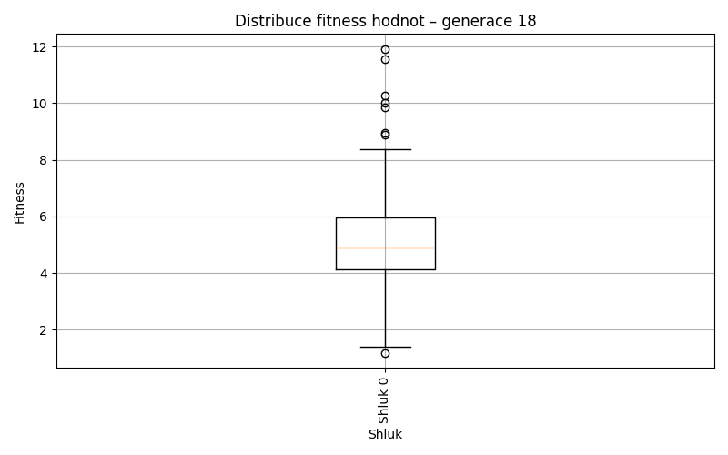
Generace 19
Stabilita mezi generací 18 → 19:
Shluk 0 → -1: 16 jedinců (25.4 %)
Shluk 0 → 0: 47 jedinců (74.6 %)
Shluk -1 → 0: 31 jedinců (83.8 %)
Shluk -1 → -1: 6 jedinců (16.2 %)
Jaccardovo mapování a overlap: Generace 18 → 19
- Shluk 0 → 0 (Jaccard: 0.50, Overlap: 0.75)
Posun centroidů mezi generací 18 → 19:
- Shluk 0: 0.7140
Generace 20
Stabilita mezi generací 19 → 20:
Shluk -1 → 0: 16 jedinců (72.7 %)
Shluk -1 → -1: 6 jedinců (27.3 %)
Shluk 0 → 0: 41 jedinců (52.6 %)
Shluk 0 → -1: 37 jedinců (47.4 %)
Jaccardovo mapování a overlap: Generace 19 → 20
- Shluk 0 → 0 (Jaccard: 0.44, Overlap: 0.72)
Posun centroidů mezi generací 19 → 20:
- Shluk 0: 0.3970
Generace 21

Stabilita mezi generací 20 → 21:
Shluk 0 → -1: 24 jedinců (42.1 %)
Shluk 0 → 0: 33 jedinců (57.9 %)
Shluk -1 → 0: 29 jedinců (67.4 %)
Shluk -1 → -1: 14 jedinců (32.6 %)
Jaccardovo mapování a overlap: Generace 20 → 21
- Shluk 0 → 0 (Jaccard: 0.38, Overlap: 0.58)
Posun centroidů mezi generací 20 → 21:
- Shluk 0: 0.6171
Generace 22
Stabilita mezi generací 21 → 22:
Shluk -1 → 0: 20 jedinců (52.6 %)
Shluk -1 → -1: 18 jedinců (47.4 %)
Shluk 0 → 0: 36 jedinců (58.1 %)
Shluk 0 → -1: 26 jedinců (41.9 %)
Jaccardovo mapování a overlap: Generace 21 → 22
- Shluk 0 → 0 (Jaccard: 0.44, Overlap: 0.64)
Posun centroidů mezi generací 21 → 22:
- Shluk 0: 0.4287

Generace 23
Stabilita mezi generací 22 → 23:
Shluk 0 → 0: 39 jedinců (69.6 %)
Shluk 0 → -1: 17 jedinců (30.4 %)
Shluk -1 → -1: 13 jedinců (29.5 %)
Shluk -1 → 0: 31 jedinců (70.5 %)
Jaccardovo mapování a overlap: Generace 22 → 23
- Shluk 0 → 0 (Jaccard: 0.45, Overlap: 0.70)
Posun centroidů mezi generací 22 → 23:
- Shluk 0: 0.3587
Generace 24
Stabilita mezi generací 23 → 24:
Shluk 0 → 0: 44 jedinců (62.9 %)
Shluk 0 → -1: 26 jedinců (37.1 %)
Shluk -1 → -1: 13 jedinců (43.3 %)
Shluk -1 → 0: 17 jedinců (56.7 %)
Jaccardovo mapování a overlap: Generace 23 → 24
- Shluk 0 → 0 (Jaccard: 0.51, Overlap: 0.72)
Posun centroidů mezi generací 23 → 24:
- Shluk 0: 0.3608
Generace 25
Stabilita mezi generací 24 → 25:
Shluk 0 → -1: 14 jedinců (23.0 %)
Shluk 0 → 0: 47 jedinců (77.0 %)
Shluk -1 → -1: 14 jedinců (35.9 %)
Shluk -1 → 0: 25 jedinců (64.1 %)
Jaccardovo mapování a overlap: Generace 24 → 25
- Shluk 0 → 0 (Jaccard: 0.55, Overlap: 0.77)
Posun centroidů mezi generací 24 → 25:
- Shluk 0: 0.9246
Generace 26
Stabilita mezi generací 25 → 26:
Shluk -1 → -1: 14 jedinců (50.0 %)
Shluk -1 → 0: 14 jedinců (50.0 %)
Shluk 0 → 0: 52 jedinců (72.2 %)
Shluk 0 → -1: 20 jedinců (27.8 %)
Jaccardovo mapování a overlap: Generace 25 → 26
- Shluk 0 → 0 (Jaccard: 0.60, Overlap: 0.79)
Posun centroidů mezi generací 25 → 26:
- Shluk 0: 0.2930
Generace 27
Stabilita mezi generací 26 → 27:
Shluk -1 → -1: 18 jedinců (52.9 %)
Shluk -1 → 0: 16 jedinců (47.1 %)
Shluk 0 → -1: 25 jedinců (37.9 %)
Shluk 0 → 0: 41 jedinců (62.1 %)
Jaccardovo mapování a overlap: Generace 26 → 27
- Shluk 0 → 0 (Jaccard: 0.50, Overlap: 0.72)
Posun centroidů mezi generací 26 → 27:
- Shluk 0: 0.6333
Generace 28
Stabilita mezi generací 27 → 28:
Shluk -1 → -1: 17 jedinců (39.5 %)
Shluk -1 → 0: 26 jedinců (60.5 %)
Shluk 0 → -1: 20 jedinců (35.1 %)
Shluk 0 → 0: 37 jedinců (64.9 %)
Jaccardovo mapování a overlap: Generace 27 → 28
- Shluk 0 → 0 (Jaccard: 0.45, Overlap: 0.65)
Posun centroidů mezi generací 27 → 28:
- Shluk 0: 0.3332
Generace 29
Stabilita mezi generací 28 → 29:
Shluk -1 → -1: 9 jedinců (24.3 %)
Shluk -1 → 0: 28 jedinců (75.7 %)
Shluk 0 → 0: 51 jedinců (81.0 %)
Shluk 0 → -1: 12 jedinců (19.0 %)
Jaccardovo mapování a overlap: Generace 28 → 29
- Shluk 0 → 0 (Jaccard: 0.56, Overlap: 0.81)
Posun centroidů mezi generací 28 → 29:
- Shluk 0: 0.3807
Generace 30
Stabilita mezi generací 29 → 30:
Shluk -1 → -1: 8 jedinců (38.1 %)
Shluk -1 → 0: 13 jedinců (61.9 %)
Shluk 0 → -1: 22 jedinců (27.8 %)
Shluk 0 → 0: 57 jedinců (72.2 %)
Jaccardovo mapování a overlap: Generace 29 → 30
- Shluk 0 → 0 (Jaccard: 0.62, Overlap: 0.81)
Posun centroidů mezi generací 29 → 30:
- Shluk 0: 0.5066
Generace 31
Stabilita mezi generací 30 → 31:
Shluk -1 → -1: 12 jedinců (40.0 %)
Shluk -1 → 0: 18 jedinců (60.0 %)
Shluk 0 → 0: 48 jedinců (68.6 %)
Shluk 0 → -1: 22 jedinců (31.4 %)
Jaccardovo mapování a overlap: Generace 30 → 31
- Shluk 0 → 0 (Jaccard: 0.55, Overlap: 0.73)
Posun centroidů mezi generací 30 → 31:
- Shluk 0: 0.4024
Generace 32
Stabilita mezi generací 31 → 32:
Shluk -1 → -1: 12 jedinců (35.3 %)
Shluk -1 → 0: 22 jedinců (64.7 %)
Shluk 0 → -1: 16 jedinců (24.2 %)
Shluk 0 → 0: 50 jedinců (75.8 %)
Jaccardovo mapování a overlap: Generace 31 → 32
- Shluk 0 → 0 (Jaccard: 0.57, Overlap: 0.76)
Posun centroidů mezi generací 31 → 32:
- Shluk 0: 0.5048
Generace 33
Stabilita mezi generací 32 → 33:
Shluk -1 → 0: 17 jedinců (60.7 %)
Shluk -1 → -1: 11 jedinců (39.3 %)
Shluk 0 → -1: 16 jedinců (22.2 %)
Shluk 0 → 0: 56 jedinců (77.8 %)
Jaccardovo mapování a overlap: Generace 32 → 33
- Shluk 0 → 0 (Jaccard: 0.63, Overlap: 0.78)
Posun centroidů mezi generací 32 → 33:
- Shluk 0: 0.2302
Generace 34
Stabilita mezi generací 33 → 34:
Shluk 0 → -1: 22 jedinců (30.1 %)
Shluk 0 → 0: 51 jedinců (69.9 %)
Shluk -1 → 0: 18 jedinců (66.7 %)
Shluk -1 → -1: 9 jedinců (33.3 %)
Jaccardovo mapování a overlap: Generace 33 → 34
- Shluk 0 → 0 (Jaccard: 0.56, Overlap: 0.74)
Posun centroidů mezi generací 33 → 34:
- Shluk 0: 0.3883
Generace 35
Stabilita mezi generací 34 → 35:
Shluk -1 → -1: 11 jedinců (35.5 %)
Shluk -1 → 0: 20 jedinců (64.5 %)
Shluk 0 → 0: 56 jedinců (81.2 %)
Shluk 0 → -1: 13 jedinců (18.8 %)
Jaccardovo mapování a overlap: Generace 34 → 35
- Shluk 0 → 0 (Jaccard: 0.63, Overlap: 0.81)
Posun centroidů mezi generací 34 → 35:
- Shluk 0: 0.2386
Generace 36
Stabilita mezi generací 35 → 36:
Shluk -1 → -1: 12 jedinců (50.0 %)
Shluk -1 → 0: 12 jedinců (50.0 %)
Shluk 0 → 0: 55 jedinců (72.4 %)
Shluk 0 → -1: 21 jedinců (27.6 %)
Jaccardovo mapování a overlap: Generace 35 → 36
- Shluk 0 → 0 (Jaccard: 0.62, Overlap: 0.82)
Posun centroidů mezi generací 35 → 36:
- Shluk 0: 0.2467
Generace 37
Stabilita mezi generací 36 → 37:
Shluk -1 → -1: 18 jedinců (54.5 %)
Shluk -1 → 0: 15 jedinců (45.5 %)
Shluk 0 → -1: 20 jedinců (29.9 %)
Shluk 0 → 0: 47 jedinců (70.1 %)
Jaccardovo mapování a overlap: Generace 36 → 37
- Shluk 0 → 0 (Jaccard: 0.57, Overlap: 0.76)
Posun centroidů mezi generací 36 → 37:
- Shluk 0: 0.7771
Generace 38
Stabilita mezi generací 37 → 38:
Shluk -1 → 0: 14 jedinců (36.8 %)
Shluk -1 → -1: 24 jedinců (63.2 %)
Shluk 0 → -1: 22 jedinců (35.5 %)
Shluk 0 → 0: 40 jedinců (64.5 %)
Jaccardovo mapování a overlap: Generace 37 → 38
- Shluk 0 → 0 (Jaccard: 0.53, Overlap: 0.74)
Posun centroidů mezi generací 37 → 38:
- Shluk 0: 0.2982
Generace 39
Stabilita mezi generací 38 → 39:
Shluk 0 → 0: 41 jedinců (75.9 %)
Shluk 0 → -1: 13 jedinců (24.1 %)
Shluk -1 → 0: 30 jedinců (65.2 %)
Shluk -1 → -1: 16 jedinců (34.8 %)
Jaccardovo mapování a overlap: Generace 38 → 39
- Shluk 0 → 0 (Jaccard: 0.49, Overlap: 0.76)
Posun centroidů mezi generací 38 → 39:
- Shluk 0: 0.4904
Generace 40
Stabilita mezi generací 39 → 40:
Shluk 0 → -1: 29 jedinců (40.8 %)
Shluk 0 → 0: 42 jedinců (59.2 %)
Shluk -1 → 0: 9 jedinců (31.0 %)
Shluk -1 → -1: 20 jedinců (69.0 %)
Jaccardovo mapování a overlap: Generace 39 → 40
- Shluk 0 → 0 (Jaccard: 0.53, Overlap: 0.82)
Posun centroidů mezi generací 39 → 40:
- Shluk 0: 0.3069
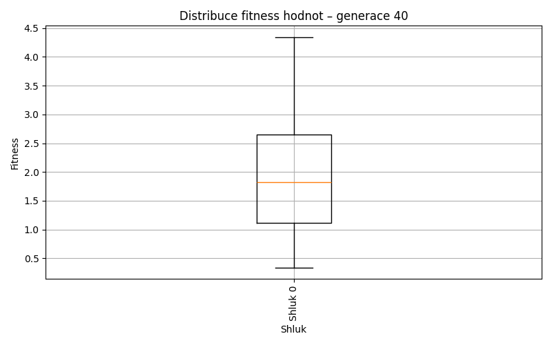
Generace 41

Stabilita mezi generací 40 → 41:
Shluk -1 → -1: 33 jedinců (67.3 %)
Shluk -1 → 0: 16 jedinců (32.7 %)
Shluk 0 → -1: 16 jedinců (31.4 %)
Shluk 0 → 0: 35 jedinců (68.6 %)
Jaccardovo mapování a overlap: Generace 40 → 41
- Shluk 0 → 0 (Jaccard: 0.52, Overlap: 0.69)
Posun centroidů mezi generací 40 → 41:
- Shluk 0: 0.3571
Generace 42
Stabilita mezi generací 41 → 42:
Shluk -1 → 0: 29 jedinců (59.2 %)
Shluk -1 → -1: 20 jedinců (40.8 %)
Shluk 0 → 0: 45 jedinců (88.2 %)
Shluk 0 → -1: 6 jedinců (11.8 %)
Jaccardovo mapování a overlap: Generace 41 → 42
- Shluk 0 → 0 (Jaccard: 0.56, Overlap: 0.88)
Posun centroidů mezi generací 41 → 42:
- Shluk 0: 0.3252
Generace 43
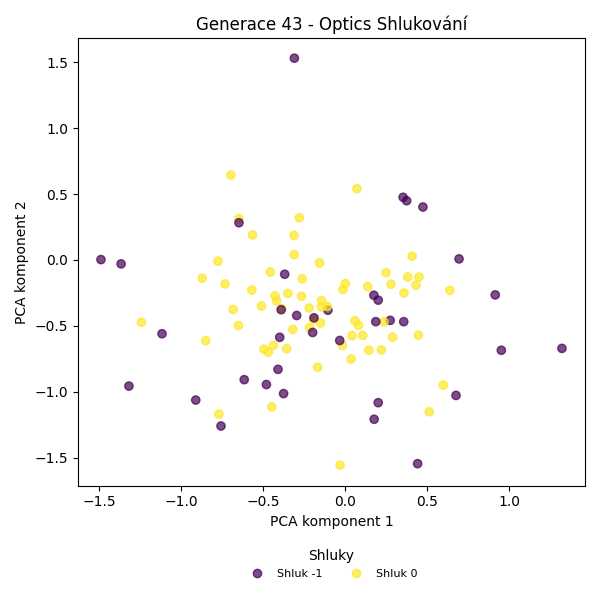
Stabilita mezi generací 42 → 43:
Shluk 0 → -1: 19 jedinců (25.7 %)
Shluk 0 → 0: 55 jedinců (74.3 %)
Shluk -1 → -1: 17 jedinců (65.4 %)
Shluk -1 → 0: 9 jedinců (34.6 %)
Jaccardovo mapování a overlap: Generace 42 → 43
- Shluk 0 → 0 (Jaccard: 0.66, Overlap: 0.86)
Posun centroidů mezi generací 42 → 43:
- Shluk 0: 0.3209
Generace 44
Stabilita mezi generací 43 → 44:
Shluk -1 → 0: 21 jedinců (58.3 %)
Shluk -1 → -1: 15 jedinců (41.7 %)
Shluk 0 → 0: 49 jedinců (76.6 %)
Shluk 0 → -1: 15 jedinců (23.4 %)
Jaccardovo mapování a overlap: Generace 43 → 44
- Shluk 0 → 0 (Jaccard: 0.58, Overlap: 0.77)
Posun centroidů mezi generací 43 → 44:
- Shluk 0: 0.3493
Generace 45
Stabilita mezi generací 44 → 45:
Shluk 0 → 0: 49 jedinců (70.0 %)
Shluk 0 → -1: 21 jedinců (30.0 %)
Shluk -1 → -1: 13 jedinců (43.3 %)
Shluk -1 → 0: 17 jedinců (56.7 %)
Jaccardovo mapování a overlap: Generace 44 → 45
- Shluk 0 → 0 (Jaccard: 0.56, Overlap: 0.74)
Posun centroidů mezi generací 44 → 45:
- Shluk 0: 0.3405
Generace 46
Stabilita mezi generací 45 → 46:
Shluk 0 → 0: 42 jedinců (63.6 %)
Shluk 0 → -1: 24 jedinců (36.4 %)
Shluk -1 → -1: 24 jedinců (70.6 %)
Shluk -1 → 0: 10 jedinců (29.4 %)
Jaccardovo mapování a overlap: Generace 45 → 46
- Shluk 0 → 0 (Jaccard: 0.55, Overlap: 0.81)
Posun centroidů mezi generací 45 → 46:
- Shluk 0: 0.4102
Generace 47

Stabilita mezi generací 46 → 47:
Shluk 0 → 0: 29 jedinců (55.8 %)
Shluk 0 → 1: 4 jedinců (7.7 %)
Shluk 0 → -1: 19 jedinců (36.5 %)
Shluk -1 → -1: 29 jedinců (60.4 %)
Shluk -1 → 0: 15 jedinců (31.2 %)
Shluk -1 → 1: 4 jedinců (8.3 %)
Jaccardovo mapování a overlap: Generace 46 → 47
- Shluk 0 → 0 (Jaccard: 0.43, Overlap: 0.66)
Posun centroidů mezi generací 46 → 47:
- Shluk 0: 0.2707
Generace 48
Stabilita mezi generací 47 → 48:
Shluk 0 → 0: 30 jedinců (68.2 %)
Shluk 0 → -1: 14 jedinců (31.8 %)
Shluk -1 → -1: 25 jedinců (52.1 %)
Shluk -1 → 0: 23 jedinců (47.9 %)
Shluk 1 → 0: 3 jedinců (37.5 %)
Shluk 1 → -1: 5 jedinců (62.5 %)
Jaccardovo mapování a overlap: Generace 47 → 48
- Shluk 0 → 0 (Jaccard: 0.43, Overlap: 0.68)
- Shluk 1 → 0 (Jaccard: 0.05, Overlap: 0.38)
Posun centroidů mezi generací 47 → 48:
- Shluk 0: 0.8149
Generace 49
Stabilita mezi generací 48 → 49:
Shluk 0 → 0: 41 jedinců (73.2 %)
Shluk 0 → -1: 15 jedinců (26.8 %)
Shluk -1 → 0: 16 jedinců (36.4 %)
Shluk -1 → -1: 28 jedinců (63.6 %)
Jaccardovo mapování a overlap: Generace 48 → 49
- Shluk 0 → 0 (Jaccard: 0.57, Overlap: 0.73)
Posun centroidů mezi generací 48 → 49:
- Shluk 0: 0.4162
Generace 50
Stabilita mezi generací 49 → 50:
Shluk 0 → 0: 41 jedinců (71.9 %)
Shluk 0 → -1: 16 jedinců (28.1 %)
Shluk -1 → 0: 17 jedinců (39.5 %)
Shluk -1 → -1: 26 jedinců (60.5 %)
Jaccardovo mapování a overlap: Generace 49 → 50
- Shluk 0 → 0 (Jaccard: 0.55, Overlap: 0.72)
Posun centroidů mezi generací 49 → 50:
- Shluk 0: 0.3961
Generace 51
Stabilita mezi generací 50 → 51:
Shluk 0 → 0: 40 jedinců (69.0 %)
Shluk 0 → -1: 18 jedinců (31.0 %)
Shluk -1 → -1: 24 jedinců (57.1 %)
Shluk -1 → 0: 18 jedinců (42.9 %)
Jaccardovo mapování a overlap: Generace 50 → 51
- Shluk 0 → 0 (Jaccard: 0.53, Overlap: 0.69)
Posun centroidů mezi generací 50 → 51:
- Shluk 0: 0.3820
Generace 52
Stabilita mezi generací 51 → 52:
Shluk 0 → 0: 34 jedinců (58.6 %)
Shluk 0 → -1: 24 jedinců (41.4 %)
Shluk -1 → 0: 22 jedinců (52.4 %)
Shluk -1 → -1: 20 jedinců (47.6 %)
Jaccardovo mapování a overlap: Generace 51 → 52
- Shluk 0 → 0 (Jaccard: 0.42, Overlap: 0.61)
Posun centroidů mezi generací 51 → 52:
- Shluk 0: 0.3515
Generace 53
Stabilita mezi generací 52 → 53:
Shluk 0 → 0: 44 jedinců (78.6 %)
Shluk 0 → -1: 12 jedinců (21.4 %)
Shluk -1 → -1: 20 jedinců (45.5 %)
Shluk -1 → 0: 24 jedinců (54.5 %)
Jaccardovo mapování a overlap: Generace 52 → 53
- Shluk 0 → 0 (Jaccard: 0.55, Overlap: 0.79)
Posun centroidů mezi generací 52 → 53:
- Shluk 0: 0.5440
Generace 54
Stabilita mezi generací 53 → 54:
Shluk 0 → 0: 42 jedinců (61.8 %)
Shluk 0 → -1: 26 jedinců (38.2 %)
Shluk -1 → -1: 21 jedinců (65.6 %)
Shluk -1 → 0: 11 jedinců (34.4 %)
Jaccardovo mapování a overlap: Generace 53 → 54
- Shluk 0 → 0 (Jaccard: 0.53, Overlap: 0.79)
Posun centroidů mezi generací 53 → 54:
- Shluk 0: 0.2216
Generace 55
Stabilita mezi generací 54 → 55:
Shluk 0 → 0: 34 jedinců (64.2 %)
Shluk 0 → -1: 19 jedinců (35.8 %)
Shluk -1 → 0: 17 jedinců (36.2 %)
Shluk -1 → -1: 30 jedinců (63.8 %)
Jaccardovo mapování a overlap: Generace 54 → 55
- Shluk 0 → 0 (Jaccard: 0.49, Overlap: 0.67)
Posun centroidů mezi generací 54 → 55:
- Shluk 0: 0.6956
Generace 56
Stabilita mezi generací 55 → 56:
Shluk 0 → 0: 37 jedinců (72.5 %)
Shluk 0 → -1: 14 jedinců (27.5 %)
Shluk -1 → -1: 27 jedinců (55.1 %)
Shluk -1 → 0: 22 jedinců (44.9 %)
Jaccardovo mapování a overlap: Generace 55 → 56
- Shluk 0 → 0 (Jaccard: 0.51, Overlap: 0.73)
Posun centroidů mezi generací 55 → 56:
- Shluk 0: 0.2938
Generace 57
Stabilita mezi generací 56 → 57:
Shluk 0 → 0: 46 jedinců (78.0 %)
Shluk 0 → -1: 13 jedinců (22.0 %)
Shluk -1 → 0: 17 jedinců (41.5 %)
Shluk -1 → -1: 24 jedinců (58.5 %)
Jaccardovo mapování a overlap: Generace 56 → 57
- Shluk 0 → 0 (Jaccard: 0.61, Overlap: 0.78)
Posun centroidů mezi generací 56 → 57:
- Shluk 0: 0.4478
Generace 58

Stabilita mezi generací 57 → 58:
Shluk 0 → 0: 46 jedinců (73.0 %)
Shluk 0 → -1: 17 jedinců (27.0 %)
Shluk -1 → -1: 31 jedinců (83.8 %)
Shluk -1 → 0: 6 jedinců (16.2 %)
Jaccardovo mapování a overlap: Generace 57 → 58
- Shluk 0 → 0 (Jaccard: 0.67, Overlap: 0.88)
Posun centroidů mezi generací 57 → 58:
- Shluk 0: 0.2123
Generace 59
Stabilita mezi generací 58 → 59:
Shluk 0 → 0: 44 jedinců (84.6 %)
Shluk 0 → -1: 8 jedinců (15.4 %)
Shluk -1 → -1: 27 jedinců (56.2 %)
Shluk -1 → 0: 21 jedinců (43.8 %)
Jaccardovo mapování a overlap: Generace 58 → 59
- Shluk 0 → 0 (Jaccard: 0.60, Overlap: 0.85)
Posun centroidů mezi generací 58 → 59:
- Shluk 0: 0.3371
Generace 60
Stabilita mezi generací 59 → 60:
Shluk 0 → 0: 51 jedinců (78.5 %)
Shluk 0 → -1: 14 jedinců (21.5 %)
Shluk -1 → -1: 23 jedinců (65.7 %)
Shluk -1 → 0: 12 jedinců (34.3 %)
Jaccardovo mapování a overlap: Generace 59 → 60
- Shluk 0 → 0 (Jaccard: 0.66, Overlap: 0.81)
Posun centroidů mezi generací 59 → 60:
- Shluk 0: 0.2591
Generace 61
Stabilita mezi generací 60 → 61:
Shluk 0 → -1: 19 jedinců (30.2 %)
Shluk 0 → 0: 44 jedinců (69.8 %)
Shluk -1 → -1: 27 jedinců (73.0 %)
Shluk -1 → 0: 10 jedinců (27.0 %)
Jaccardovo mapování a overlap: Generace 60 → 61
- Shluk 0 → 0 (Jaccard: 0.60, Overlap: 0.81)
Posun centroidů mezi generací 60 → 61:
- Shluk 0: 0.2222
Generace 62


Stabilita mezi generací 61 → 62:
Shluk -1 → 0: 23 jedinců (50.0 %)
Shluk -1 → -1: 23 jedinců (50.0 %)
Shluk 0 → 0: 50 jedinců (92.6 %)
Shluk 0 → -1: 4 jedinců (7.4 %)
Jaccardovo mapování a overlap: Generace 61 → 62
- Shluk 0 → 0 (Jaccard: 0.65, Overlap: 0.93)
Posun centroidů mezi generací 61 → 62:
- Shluk 0: 0.2268
Generace 63
Stabilita mezi generací 62 → 63:
Shluk 0 → -1: 12 jedinců (16.4 %)
Shluk 0 → 0: 61 jedinců (83.6 %)
Shluk -1 → -1: 14 jedinců (51.9 %)
Shluk -1 → 0: 13 jedinců (48.1 %)
Jaccardovo mapování a overlap: Generace 62 → 63
- Shluk 0 → 0 (Jaccard: 0.71, Overlap: 0.84)
Posun centroidů mezi generací 62 → 63:
- Shluk 0: 0.1394
Generace 64
Stabilita mezi generací 63 → 64:
Shluk -1 → -1: 18 jedinců (69.2 %)
Shluk -1 → 0: 8 jedinců (30.8 %)
Shluk 0 → -1: 20 jedinců (27.0 %)
Shluk 0 → 0: 54 jedinců (73.0 %)
Jaccardovo mapování a overlap: Generace 63 → 64
- Shluk 0 → 0 (Jaccard: 0.66, Overlap: 0.87)
Posun centroidů mezi generací 63 → 64:
- Shluk 0: 0.1302
Generace 65
Stabilita mezi generací 64 → 65:
Shluk -1 → -1: 25 jedinců (65.8 %)
Shluk -1 → 0: 13 jedinců (34.2 %)
Shluk 0 → 0: 53 jedinců (85.5 %)
Shluk 0 → -1: 9 jedinců (14.5 %)
Jaccardovo mapování a overlap: Generace 64 → 65
- Shluk 0 → 0 (Jaccard: 0.71, Overlap: 0.85)
Posun centroidů mezi generací 64 → 65:
- Shluk 0: 0.1882
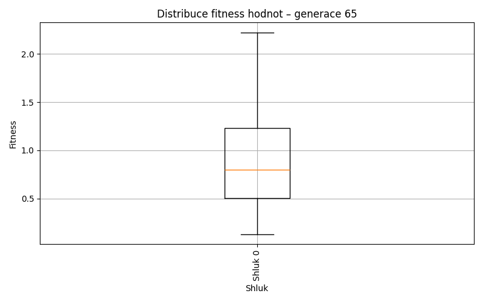
Generace 66
Stabilita mezi generací 65 → 66:
Shluk -1 → -1: 19 jedinců (55.9 %)
Shluk -1 → 0: 15 jedinců (44.1 %)
Shluk 0 → 0: 45 jedinců (68.2 %)
Shluk 0 → -1: 21 jedinců (31.8 %)
Jaccardovo mapování a overlap: Generace 65 → 66
- Shluk 0 → 0 (Jaccard: 0.56, Overlap: 0.75)
Posun centroidů mezi generací 65 → 66:
- Shluk 0: 0.1296
Generace 67
Stabilita mezi generací 66 → 67:
Shluk -1 → -1: 19 jedinců (47.5 %)
Shluk -1 → 0: 21 jedinců (52.5 %)
Shluk 0 → 0: 46 jedinců (76.7 %)
Shluk 0 → -1: 14 jedinců (23.3 %)
Jaccardovo mapování a overlap: Generace 66 → 67
- Shluk 0 → 0 (Jaccard: 0.57, Overlap: 0.77)
Posun centroidů mezi generací 66 → 67:
- Shluk 0: 0.1928

Generace 68

Stabilita mezi generací 67 → 68:
Shluk -1 → -1: 19 jedinců (57.6 %)
Shluk -1 → 0: 14 jedinců (42.4 %)
Shluk 0 → 0: 47 jedinců (70.1 %)
Shluk 0 → -1: 20 jedinců (29.9 %)
Jaccardovo mapování a overlap: Generace 67 → 68
- Shluk 0 → 0 (Jaccard: 0.58, Overlap: 0.77)
Posun centroidů mezi generací 67 → 68:
- Shluk 0: 0.1729
Generace 69
Stabilita mezi generací 68 → 69:
Shluk -1 → -1: 29 jedinců (74.4 %)
Shluk -1 → 0: 10 jedinců (25.6 %)
Shluk 0 → 0: 45 jedinců (73.8 %)
Shluk 0 → -1: 16 jedinců (26.2 %)
Jaccardovo mapování a overlap: Generace 68 → 69
- Shluk 0 → 0 (Jaccard: 0.63, Overlap: 0.82)
Posun centroidů mezi generací 68 → 69:
- Shluk 0: 0.1294
Generace 70
Stabilita mezi generací 69 → 70:
Shluk -1 → -1: 28 jedinců (62.2 %)
Shluk -1 → 0: 17 jedinců (37.8 %)
Shluk 0 → 0: 45 jedinců (81.8 %)
Shluk 0 → -1: 10 jedinců (18.2 %)
Jaccardovo mapování a overlap: Generace 69 → 70
- Shluk 0 → 0 (Jaccard: 0.62, Overlap: 0.82)
Posun centroidů mezi generací 69 → 70:
- Shluk 0: 0.1205
Generace 71
Stabilita mezi generací 70 → 71:
Shluk -1 → -1: 30 jedinců (78.9 %)
Shluk -1 → 0: 8 jedinců (21.1 %)
Shluk 0 → -1: 16 jedinců (25.8 %)
Shluk 0 → 0: 46 jedinců (74.2 %)
Jaccardovo mapování a overlap: Generace 70 → 71
- Shluk 0 → 0 (Jaccard: 0.66, Overlap: 0.85)
Posun centroidů mezi generací 70 → 71:
- Shluk 0: 0.3022
Generace 72
Stabilita mezi generací 71 → 72:
Shluk -1 → 0: 13 jedinců (28.3 %)
Shluk -1 → -1: 33 jedinců (71.7 %)
Shluk 0 → 0: 42 jedinců (77.8 %)
Shluk 0 → -1: 12 jedinců (22.2 %)
Jaccardovo mapování a overlap: Generace 71 → 72
- Shluk 0 → 0 (Jaccard: 0.63, Overlap: 0.78)
Posun centroidů mezi generací 71 → 72:
- Shluk 0: 0.1458
Generace 73

Stabilita mezi generací 72 → 73:
Shluk 0 → -1: 5 jedinců (9.1 %)
Shluk 0 → 0: 50 jedinců (90.9 %)
Shluk -1 → 0: 12 jedinců (26.7 %)
Shluk -1 → -1: 33 jedinců (73.3 %)
Jaccardovo mapování a overlap: Generace 72 → 73
- Shluk 0 → 0 (Jaccard: 0.75, Overlap: 0.91)
Posun centroidů mezi generací 72 → 73:
- Shluk 0: 0.1954
Generace 74
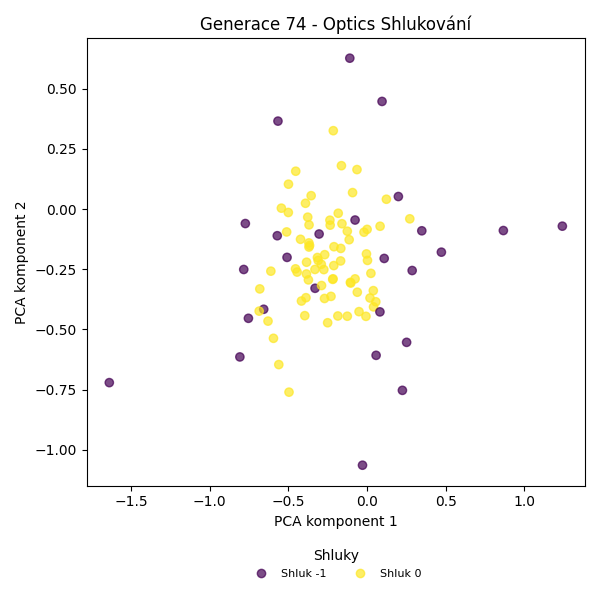
Stabilita mezi generací 73 → 74:
Shluk -1 → -1: 21 jedinců (55.3 %)
Shluk -1 → 0: 17 jedinců (44.7 %)
Shluk 0 → 0: 57 jedinců (91.9 %)
Shluk 0 → -1: 5 jedinců (8.1 %)
Jaccardovo mapování a overlap: Generace 73 → 74
- Shluk 0 → 0 (Jaccard: 0.72, Overlap: 0.92)
Posun centroidů mezi generací 73 → 74:
- Shluk 0: 0.1818
Generace 75
Stabilita mezi generací 74 → 75:
Shluk -1 → -1: 22 jedinců (84.6 %)
Shluk -1 → 0: 4 jedinců (15.4 %)
Shluk 0 → 0: 58 jedinců (78.4 %)
Shluk 0 → -1: 16 jedinců (21.6 %)
Jaccardovo mapování a overlap: Generace 74 → 75
- Shluk 0 → 0 (Jaccard: 0.74, Overlap: 0.94)
Posun centroidů mezi generací 74 → 75:
- Shluk 0: 0.0878
Generace 76
Stabilita mezi generací 75 → 76:
Shluk -1 → 0: 14 jedinců (36.8 %)
Shluk -1 → -1: 24 jedinců (63.2 %)
Shluk 0 → 0: 55 jedinců (88.7 %)
Shluk 0 → -1: 7 jedinců (11.3 %)
Jaccardovo mapování a overlap: Generace 75 → 76
- Shluk 0 → 0 (Jaccard: 0.72, Overlap: 0.89)
Posun centroidů mezi generací 75 → 76:
- Shluk 0: 0.1090
Generace 77
Stabilita mezi generací 76 → 77:
Shluk 0 → -1: 18 jedinců (26.1 %)
Shluk 0 → 0: 51 jedinců (73.9 %)
Shluk -1 → -1: 27 jedinců (87.1 %)
Shluk -1 → 0: 4 jedinců (12.9 %)
Jaccardovo mapování a overlap: Generace 76 → 77
- Shluk 0 → 0 (Jaccard: 0.70, Overlap: 0.93)
Posun centroidů mezi generací 76 → 77:
- Shluk 0: 0.2322
Generace 78
Stabilita mezi generací 77 → 78:
Shluk -1 → -1: 31 jedinců (68.9 %)
Shluk -1 → 0: 14 jedinců (31.1 %)
Shluk 0 → 0: 42 jedinců (76.4 %)
Shluk 0 → -1: 13 jedinců (23.6 %)
Jaccardovo mapování a overlap: Generace 77 → 78
- Shluk 0 → 0 (Jaccard: 0.61, Overlap: 0.76)
Posun centroidů mezi generací 77 → 78:
- Shluk 0: 0.0970
Generace 79
Stabilita mezi generací 78 → 79:
Shluk -1 → -1: 34 jedinců (77.3 %)
Shluk -1 → 0: 10 jedinců (22.7 %)
Shluk 0 → 0: 43 jedinců (76.8 %)
Shluk 0 → -1: 13 jedinců (23.2 %)
Jaccardovo mapování a overlap: Generace 78 → 79
- Shluk 0 → 0 (Jaccard: 0.65, Overlap: 0.81)
Posun centroidů mezi generací 78 → 79:
- Shluk 0: 0.0885
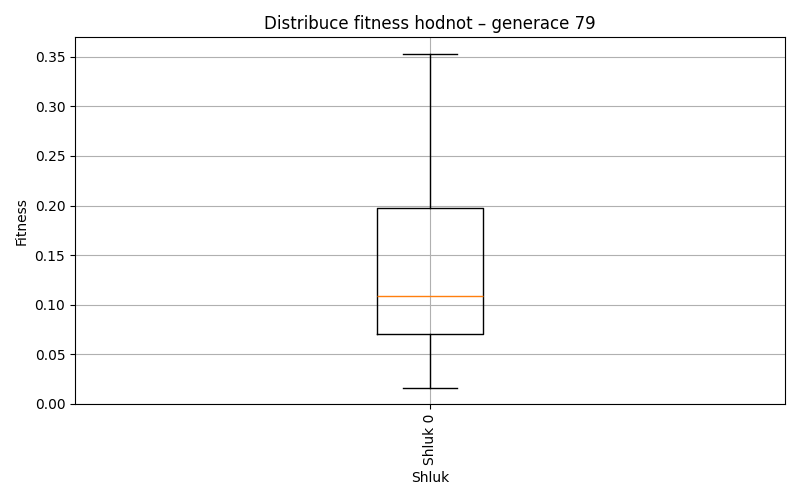
Generace 80
Stabilita mezi generací 79 → 80:
Shluk -1 → 0: 21 jedinců (44.7 %)
Shluk -1 → -1: 26 jedinců (55.3 %)
Shluk 0 → 0: 52 jedinců (98.1 %)
Shluk 0 → -1: 1 jedinců (1.9 %)
Jaccardovo mapování a overlap: Generace 79 → 80
- Shluk 0 → 0 (Jaccard: 0.70, Overlap: 0.98)
Posun centroidů mezi generací 79 → 80:
- Shluk 0: 0.0796
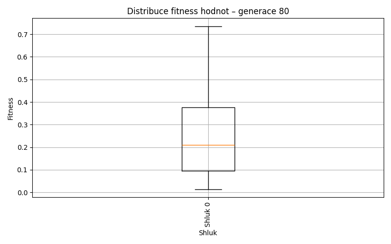
Generace 81
Stabilita mezi generací 80 → 81:
Shluk 0 → -1: 23 jedinců (31.5 %)
Shluk 0 → 0: 50 jedinců (68.5 %)
Shluk -1 → -1: 22 jedinců (81.5 %)
Shluk -1 → 0: 5 jedinců (18.5 %)
Jaccardovo mapování a overlap: Generace 80 → 81
- Shluk 0 → 0 (Jaccard: 0.64, Overlap: 0.91)
Posun centroidů mezi generací 80 → 81:
- Shluk 0: 0.0595
Generace 82
Stabilita mezi generací 81 → 82:
Shluk -1 → 0: 13 jedinců (28.9 %)
Shluk -1 → -1: 32 jedinců (71.1 %)
Shluk 0 → 0: 46 jedinců (83.6 %)
Shluk 0 → -1: 9 jedinců (16.4 %)
Jaccardovo mapování a overlap: Generace 81 → 82
- Shluk 0 → 0 (Jaccard: 0.68, Overlap: 0.84)
Posun centroidů mezi generací 81 → 82:
- Shluk 0: 0.0364
Generace 83
Stabilita mezi generací 82 → 83:
Shluk 0 → -1: 7 jedinců (11.9 %)
Shluk 0 → 0: 52 jedinců (88.1 %)
Shluk -1 → 0: 13 jedinců (31.7 %)
Shluk -1 → -1: 28 jedinců (68.3 %)
Jaccardovo mapování a overlap: Generace 82 → 83
- Shluk 0 → 0 (Jaccard: 0.72, Overlap: 0.88)
Posun centroidů mezi generací 82 → 83:
- Shluk 0: 0.0927
Generace 84
Stabilita mezi generací 83 → 84:
Shluk -1 → 0: 7 jedinců (20.0 %)
Shluk -1 → -1: 28 jedinců (80.0 %)
Shluk 0 → 0: 53 jedinců (81.5 %)
Shluk 0 → -1: 12 jedinců (18.5 %)
Jaccardovo mapování a overlap: Generace 83 → 84
- Shluk 0 → 0 (Jaccard: 0.74, Overlap: 0.88)
Posun centroidů mezi generací 83 → 84:
- Shluk 0: 0.1493
Generace 85
Stabilita mezi generací 84 → 85:
Shluk 0 → 0: 52 jedinců (86.7 %)
Shluk 0 → -1: 8 jedinců (13.3 %)
Shluk -1 → -1: 33 jedinců (82.5 %)
Shluk -1 → 0: 7 jedinců (17.5 %)
Jaccardovo mapování a overlap: Generace 84 → 85
- Shluk 0 → 0 (Jaccard: 0.78, Overlap: 0.88)
Posun centroidů mezi generací 84 → 85:
- Shluk 0: 0.0529
Generace 86
Stabilita mezi generací 85 → 86:
Shluk 0 → -1: 14 jedinců (23.7 %)
Shluk 0 → 0: 45 jedinců (76.3 %)
Shluk -1 → 0: 11 jedinců (26.8 %)
Shluk -1 → -1: 30 jedinců (73.2 %)
Jaccardovo mapování a overlap: Generace 85 → 86
- Shluk 0 → 0 (Jaccard: 0.64, Overlap: 0.80)
Posun centroidů mezi generací 85 → 86:
- Shluk 0: 0.1486
Generace 87
Stabilita mezi generací 86 → 87:
Shluk -1 → 0: 13 jedinců (29.5 %)
Shluk -1 → -1: 31 jedinců (70.5 %)
Shluk 0 → 0: 47 jedinců (83.9 %)
Shluk 0 → -1: 9 jedinců (16.1 %)
Jaccardovo mapování a overlap: Generace 86 → 87
- Shluk 0 → 0 (Jaccard: 0.68, Overlap: 0.84)
Posun centroidů mezi generací 86 → 87:
- Shluk 0: 0.1294
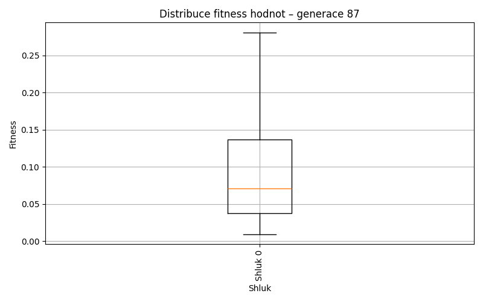
Generace 88
Stabilita mezi generací 87 → 88:
Shluk 0 → -1: 11 jedinců (18.3 %)
Shluk 0 → 0: 49 jedinců (81.7 %)
Shluk -1 → -1: 28 jedinců (70.0 %)
Shluk -1 → 0: 12 jedinců (30.0 %)
Jaccardovo mapování a overlap: Generace 87 → 88
- Shluk 0 → 0 (Jaccard: 0.68, Overlap: 0.82)
Posun centroidů mezi generací 87 → 88:
- Shluk 0: 0.0985
Generace 89
Stabilita mezi generací 88 → 89:
Shluk -1 → -1: 22 jedinců (56.4 %)
Shluk -1 → 0: 17 jedinců (43.6 %)
Shluk 0 → 0: 58 jedinců (95.1 %)
Shluk 0 → -1: 3 jedinců (4.9 %)
Jaccardovo mapování a overlap: Generace 88 → 89
- Shluk 0 → 0 (Jaccard: 0.74, Overlap: 0.95)
Posun centroidů mezi generací 88 → 89:
- Shluk 0: 0.0788
Generace 90
Stabilita mezi generací 89 → 90:
Shluk -1 → 0: 4 jedinců (16.0 %)
Shluk -1 → -1: 21 jedinců (84.0 %)
Shluk 0 → -1: 16 jedinců (21.3 %)
Shluk 0 → 0: 59 jedinců (78.7 %)
Jaccardovo mapování a overlap: Generace 89 → 90
- Shluk 0 → 0 (Jaccard: 0.75, Overlap: 0.94)
Posun centroidů mezi generací 89 → 90:
- Shluk 0: 0.0874
Generace 91
Stabilita mezi generací 90 → 91:
Shluk 0 → -1: 15 jedinců (23.8 %)
Shluk 0 → 0: 48 jedinců (76.2 %)
Shluk -1 → -1: 33 jedinců (89.2 %)
Shluk -1 → 0: 4 jedinců (10.8 %)
Jaccardovo mapování a overlap: Generace 90 → 91
- Shluk 0 → 0 (Jaccard: 0.72, Overlap: 0.92)
Posun centroidů mezi generací 90 → 91:
- Shluk 0: 0.0649
Generace 92
Stabilita mezi generací 91 → 92:
Shluk -1 → -1: 36 jedinců (75.0 %)
Shluk -1 → 0: 12 jedinců (25.0 %)
Shluk 0 → 0: 49 jedinců (94.2 %)
Shluk 0 → -1: 3 jedinců (5.8 %)
Jaccardovo mapování a overlap: Generace 91 → 92
- Shluk 0 → 0 (Jaccard: 0.77, Overlap: 0.94)
Posun centroidů mezi generací 91 → 92:
- Shluk 0: 0.0611
Generace 93
Stabilita mezi generací 92 → 93:
Shluk -1 → -1: 39 jedinců (100.0 %)
Shluk 0 → -1: 56 jedinců (91.8 %)
Shluk 0 → 0: 5 jedinců (8.2 %)
Jaccardovo mapování a overlap: Generace 92 → 93
- Shluk 0 → 0 (Jaccard: 0.08, Overlap: 1.00)
Posun centroidů mezi generací 92 → 93:
- Shluk 0: 0.0572
Generace 94
Stabilita mezi generací 93 → 94:
Shluk -1 → -1: 31 jedinců (32.6 %)
Shluk -1 → 0: 64 jedinců (67.4 %)
Shluk 0 → 0: 5 jedinců (100.0 %)
Jaccardovo mapování a overlap: Generace 93 → 94
- Shluk 0 → 0 (Jaccard: 0.07, Overlap: 1.00)
Posun centroidů mezi generací 93 → 94:
- Shluk 0: 0.0429
Generace 95
Stabilita mezi generací 94 → 95:
Shluk -1 → -1: 29 jedinců (93.5 %)
Shluk -1 → 0: 2 jedinců (6.5 %)
Shluk 0 → -1: 14 jedinců (20.3 %)
Shluk 0 → 0: 55 jedinců (79.7 %)
Jaccardovo mapování a overlap: Generace 94 → 95
- Shluk 0 → 0 (Jaccard: 0.77, Overlap: 0.96)
Posun centroidů mezi generací 94 → 95:
- Shluk 0: 0.0479
Generace 96
Stabilita mezi generací 95 → 96:
Shluk -1 → -1: 18 jedinců (41.9 %)
Shluk -1 → 0: 25 jedinců (58.1 %)
Shluk 0 → 0: 54 jedinců (94.7 %)
Shluk 0 → -1: 3 jedinců (5.3 %)
Jaccardovo mapování a overlap: Generace 95 → 96
- Shluk 0 → 0 (Jaccard: 0.66, Overlap: 0.95)
Posun centroidů mezi generací 95 → 96:
- Shluk 0: 0.0411
Generace 97
Stabilita mezi generací 96 → 97:
Shluk -1 → -1: 19 jedinců (90.5 %)
Shluk -1 → 0: 2 jedinců (9.5 %)
Shluk 0 → -1: 19 jedinců (24.1 %)
Shluk 0 → 0: 60 jedinců (75.9 %)
Jaccardovo mapování a overlap: Generace 96 → 97
- Shluk 0 → 0 (Jaccard: 0.74, Overlap: 0.97)
Posun centroidů mezi generací 96 → 97:
- Shluk 0: 0.0396
Generace 98
Stabilita mezi generací 97 → 98:
Shluk -1 → -1: 28 jedinců (73.7 %)
Shluk -1 → 0: 10 jedinců (26.3 %)
Shluk 0 → 0: 58 jedinců (93.5 %)
Shluk 0 → -1: 4 jedinců (6.5 %)
Jaccardovo mapování a overlap: Generace 97 → 98
- Shluk 0 → 0 (Jaccard: 0.81, Overlap: 0.94)
Posun centroidů mezi generací 97 → 98:
- Shluk 0: 0.0568
Generace 99
Stabilita mezi generací 98 → 99:
Shluk -1 → -1: 27 jedinců (84.4 %)
Shluk -1 → 0: 5 jedinců (15.6 %)
Shluk 0 → 0: 65 jedinců (95.6 %)
Shluk 0 → -1: 3 jedinců (4.4 %)
Jaccardovo mapování a overlap: Generace 98 → 99
- Shluk 0 → 0 (Jaccard: 0.89, Overlap: 0.96)
Posun centroidů mezi generací 98 → 99:
- Shluk 0: 0.0988
Generace 100
Stabilita mezi generací 99 → 100:
Shluk -1 → -1: 22 jedinců (73.3 %)
Shluk -1 → 0: 8 jedinců (26.7 %)
Shluk 0 → -1: 10 jedinců (14.3 %)
Shluk 0 → 0: 60 jedinců (85.7 %)
Jaccardovo mapování a overlap: Generace 99 → 100
- Shluk 0 → 0 (Jaccard: 0.77, Overlap: 0.88)
Posun centroidů mezi generací 99 → 100:
- Shluk 0: 0.0480
Generace 101
Stabilita mezi generací 100 → 101:
Shluk -1 → -1: 20 jedinců (62.5 %)
Shluk -1 → 0: 12 jedinců (37.5 %)
Shluk 0 → 0: 58 jedinců (85.3 %)
Shluk 0 → -1: 10 jedinců (14.7 %)
Jaccardovo mapování a overlap: Generace 100 → 101
- Shluk 0 → 0 (Jaccard: 0.72, Overlap: 0.85)
Posun centroidů mezi generací 100 → 101:
- Shluk 0: 0.0506
Generace 102
Stabilita mezi generací 101 → 102:
Shluk -1 → -1: 18 jedinců (60.0 %)
Shluk -1 → 0: 12 jedinců (40.0 %)
Shluk 0 → -1: 4 jedinců (5.7 %)
Shluk 0 → 0: 66 jedinců (94.3 %)
Jaccardovo mapování a overlap: Generace 101 → 102
- Shluk 0 → 0 (Jaccard: 0.80, Overlap: 0.94)
Posun centroidů mezi generací 101 → 102:
- Shluk 0: 0.0231
Generace 103

Stabilita mezi generací 102 → 103:
Shluk -1 → -1: 16 jedinců (72.7 %)
Shluk -1 → 0: 6 jedinců (27.3 %)
Shluk 0 → -1: 4 jedinců (5.1 %)
Shluk 0 → 0: 74 jedinců (94.9 %)
Jaccardovo mapování a overlap: Generace 102 → 103
- Shluk 0 → 0 (Jaccard: 0.88, Overlap: 0.95)
Posun centroidů mezi generací 102 → 103:
- Shluk 0: 0.0279

Generace 104

Stabilita mezi generací 103 → 104:
Shluk -1 → -1: 20 jedinců (100.0 %)
Shluk 0 → 0: 75 jedinců (93.8 %)
Shluk 0 → -1: 5 jedinců (6.2 %)
Jaccardovo mapování a overlap: Generace 103 → 104
- Shluk 0 → 0 (Jaccard: 0.94, Overlap: 1.00)
Posun centroidů mezi generací 103 → 104:
- Shluk 0: 0.0521
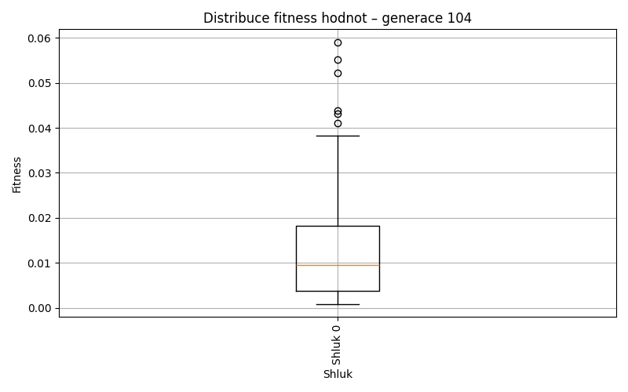
Generace 105
Stabilita mezi generací 104 → 105:
Shluk -1 → -1: 24 jedinců (96.0 %)
Shluk -1 → 0: 1 jedinců (4.0 %)
Shluk 0 → -1: 23 jedinců (30.7 %)
Shluk 0 → 0: 52 jedinců (69.3 %)
Jaccardovo mapování a overlap: Generace 104 → 105
- Shluk 0 → 0 (Jaccard: 0.68, Overlap: 0.98)
Posun centroidů mezi generací 104 → 105:
- Shluk 0: 0.0590
Generace 106

Stabilita mezi generací 105 → 106:
Shluk -1 → -1: 26 jedinců (55.3 %)
Shluk -1 → 0: 21 jedinců (44.7 %)
Shluk 0 → 0: 51 jedinců (96.2 %)
Shluk 0 → -1: 2 jedinců (3.8 %)
Jaccardovo mapování a overlap: Generace 105 → 106
- Shluk 0 → 0 (Jaccard: 0.69, Overlap: 0.96)
Posun centroidů mezi generací 105 → 106:
- Shluk 0: 0.0258
Generace 107
Stabilita mezi generací 106 → 107:
Shluk -1 → -1: 25 jedinců (89.3 %)
Shluk -1 → 0: 3 jedinců (10.7 %)
Shluk 0 → -1: 22 jedinců (30.6 %)
Shluk 0 → 0: 50 jedinců (69.4 %)
Jaccardovo mapování a overlap: Generace 106 → 107
- Shluk 0 → 0 (Jaccard: 0.67, Overlap: 0.94)
Posun centroidů mezi generací 106 → 107:
- Shluk 0: 0.0513
Generace 108
Stabilita mezi generací 107 → 108:
Shluk -1 → -1: 23 jedinců (48.9 %)
Shluk -1 → 0: 24 jedinců (51.1 %)
Shluk 0 → 0: 49 jedinců (92.5 %)
Shluk 0 → -1: 4 jedinců (7.5 %)
Jaccardovo mapování a overlap: Generace 107 → 108
- Shluk 0 → 0 (Jaccard: 0.64, Overlap: 0.92)
Posun centroidů mezi generací 107 → 108:
- Shluk 0: 0.0329

Generace 109
Stabilita mezi generací 108 → 109:
Shluk -1 → -1: 25 jedinců (92.6 %)
Shluk -1 → 0: 2 jedinců (7.4 %)
Shluk 0 → 0: 59 jedinců (80.8 %)
Shluk 0 → -1: 14 jedinců (19.2 %)
Jaccardovo mapování a overlap: Generace 108 → 109
- Shluk 0 → 0 (Jaccard: 0.79, Overlap: 0.97)
Posun centroidů mezi generací 108 → 109:
- Shluk 0: 0.0146
Generace 110
Stabilita mezi generací 109 → 110:
Shluk -1 → -1: 36 jedinců (92.3 %)
Shluk -1 → 0: 3 jedinců (7.7 %)
Shluk 0 → -1: 12 jedinců (19.7 %)
Shluk 0 → 0: 49 jedinců (80.3 %)
Jaccardovo mapování a overlap: Generace 109 → 110
- Shluk 0 → 0 (Jaccard: 0.77, Overlap: 0.94)
Posun centroidů mezi generací 109 → 110:
- Shluk 0: 0.0178
Generace 111

Stabilita mezi generací 110 → 111:
Shluk -1 → -1: 36 jedinců (75.0 %)
Shluk -1 → 0: 12 jedinců (25.0 %)
Shluk 0 → 0: 49 jedinců (94.2 %)
Shluk 0 → -1: 3 jedinců (5.8 %)
Jaccardovo mapování a overlap: Generace 110 → 111
- Shluk 0 → 0 (Jaccard: 0.77, Overlap: 0.94)
Posun centroidů mezi generací 110 → 111:
- Shluk 0: 0.0167
Generace 112
Stabilita mezi generací 111 → 112:
Shluk -1 → -1: 33 jedinců (84.6 %)
Shluk -1 → 0: 6 jedinců (15.4 %)
Shluk 0 → 0: 54 jedinců (88.5 %)
Shluk 0 → -1: 7 jedinců (11.5 %)
Jaccardovo mapování a overlap: Generace 111 → 112
- Shluk 0 → 0 (Jaccard: 0.81, Overlap: 0.90)
Posun centroidů mezi generací 111 → 112:
- Shluk 0: 0.0282
Generace 113
Stabilita mezi generací 112 → 113:
Shluk -1 → -1: 18 jedinců (45.0 %)
Shluk -1 → 0: 22 jedinců (55.0 %)
Shluk 0 → 0: 59 jedinců (98.3 %)
Shluk 0 → -1: 1 jedinců (1.7 %)
Jaccardovo mapování a overlap: Generace 112 → 113
- Shluk 0 → 0 (Jaccard: 0.72, Overlap: 0.98)
Posun centroidů mezi generací 112 → 113:
- Shluk 0: 0.0148
Generace 114
Stabilita mezi generací 113 → 114:
Shluk -1 → -1: 16 jedinců (84.2 %)
Shluk -1 → 0: 3 jedinců (15.8 %)
Shluk 0 → 0: 70 jedinců (86.4 %)
Shluk 0 → -1: 11 jedinců (13.6 %)
Jaccardovo mapování a overlap: Generace 113 → 114
- Shluk 0 → 0 (Jaccard: 0.83, Overlap: 0.96)
Posun centroidů mezi generací 113 → 114:
- Shluk 0: 0.0156
Generace 115

Stabilita mezi generací 114 → 115:
Shluk -1 → -1: 21 jedinců (77.8 %)
Shluk -1 → 0: 6 jedinců (22.2 %)
Shluk 0 → 0: 65 jedinců (89.0 %)
Shluk 0 → -1: 8 jedinců (11.0 %)
Jaccardovo mapování a overlap: Generace 114 → 115
- Shluk 0 → 0 (Jaccard: 0.82, Overlap: 0.92)
Posun centroidů mezi generací 114 → 115:
- Shluk 0: 0.0195
Generace 116
Stabilita mezi generací 115 → 116:
Shluk -1 → -1: 23 jedinců (79.3 %)
Shluk -1 → 0: 6 jedinců (20.7 %)
Shluk 0 → 0: 68 jedinců (95.8 %)
Shluk 0 → -1: 3 jedinců (4.2 %)
Jaccardovo mapování a overlap: Generace 115 → 116
- Shluk 0 → 0 (Jaccard: 0.88, Overlap: 0.96)
Posun centroidů mezi generací 115 → 116:
- Shluk 0: 0.0251
Generace 117
Stabilita mezi generací 116 → 117:
Shluk -1 → -1: 23 jedinců (88.5 %)
Shluk -1 → 0: 3 jedinců (11.5 %)
Shluk 0 → 0: 63 jedinců (85.1 %)
Shluk 0 → -1: 11 jedinců (14.9 %)
Jaccardovo mapování a overlap: Generace 116 → 117
- Shluk 0 → 0 (Jaccard: 0.82, Overlap: 0.95)
Posun centroidů mezi generací 116 → 117:
- Shluk 0: 0.0131
Generace 118
Stabilita mezi generací 117 → 118:
Shluk -1 → -1: 27 jedinců (79.4 %)
Shluk -1 → 0: 7 jedinců (20.6 %)
Shluk 0 → 0: 63 jedinců (95.5 %)
Shluk 0 → -1: 3 jedinců (4.5 %)
Jaccardovo mapování a overlap: Generace 117 → 118
- Shluk 0 → 0 (Jaccard: 0.86, Overlap: 0.95)
Posun centroidů mezi generací 117 → 118:
- Shluk 0: 0.0080
Generace 119
Stabilita mezi generací 118 → 119:
Shluk -1 → -1: 25 jedinců (83.3 %)
Shluk -1 → 0: 5 jedinců (16.7 %)
Shluk 0 → 0: 69 jedinců (98.6 %)
Shluk 0 → -1: 1 jedinců (1.4 %)
Jaccardovo mapování a overlap: Generace 118 → 119
- Shluk 0 → 0 (Jaccard: 0.92, Overlap: 0.99)
Posun centroidů mezi generací 118 → 119:
- Shluk 0: 0.0042